Computing Large Convex Regions of Obstacle-Free Space through SemiDefinite Programming
Report written by: Buu Phan and Florence Tsang
Contents
Introduction to the Problem
In path planners for robots, it is often advantageous to be able to quickly identify large regions of obstacle free space that the robot can freely move through. This is especially important for robots that need to operate in cluttered environments. The exploration of a solution to this problem by [1] was largely motivated by the problem of finding obstacle-free regions a bi-pedal robot could step on. The proposed algorithm assumes that the environment consists of convex obstacles, which is a reasonable assumption since there are many methods available to decompose obstacles into convex shapes. A high level of detail is not needed. It also assumes that there will be a human operator (or another algorithm) to help select the general location of where this obstacle-free region should be.
Although we only show the 2D implementation of this algorithm, it is applicable in 3D space as well.
Problem Formulation
The general algorithm consists of simultaneously maximizing a polyhedral and an inscribed ellipsoid in the specified location. The polyhedral is composed of the intersection of multiple halfspaces: 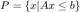 and the ellipsoid is represented as an image of an euclidean unit ball: 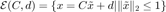. Given this, we are attempting to solve the following problem:
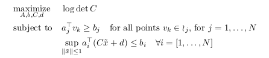
The objective function describes how 'big' the ellipsoid is. By maximizing the inscribed ellipsoid, we are by proxy, maximizing the polyhedral that contains the obstacle-free space. The first constraint prevents the polyhedral from containing any vertices of all obstacles, as none of their vertices should lie in the polyhedral. The second constraint ensures that the ellipsoid does not extend past the polyhedral.
Proposed Solution
Instead of directly solving the above problem, which is non-convex, [1] proposes to iteratively find an obstacle-free polyhedral, find the maximal inscribed ellipsoid, and repeat until the ellipsoid no longer grows more than a specified threshold. [1] has nicknamed this procedure as IRIS (Iterative Regional Inflation by Semidefinite Programming). Even though IRIS does not guarantee it will find the largest obstacle-free convex space in a given environment, it does guarantee convergence if the environment is bounded. Because the ellipsoid will not increase past the environment boundaries.
The solution has two major parts: 1) Find the hyperplanes that separate the given ellipsoid from all the obstacles (resulting in an obstacle-free polyhedral), and 2) find the inscribed ellipsoid in this polyhedral. This procedure will be repeated until the growth of the ellipsoid falls below our specified threshold. Growth is measured by:
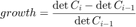
Where 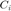 defines the newly inscribed ellipsoid and 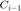 defines the inscribed ellipsoid from the previous iteration. 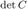 is linearly related to the area, thus changes in is proportional to the change in area of the ellipsoid.
More details of each portion of the solutions are given in the following sections.
Part 1 - Find separating hyperplanes
Given an ellipsoid defined by 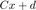, we need to find the closest point x_star to the ellipsoid from the given set of obstacles, then define a hyperplane that separates the ellipsoid and the obstacle that x_star is on.
Since the ellipsoid is defined as an image of the unit ball, the inverse of this image can be defined as:
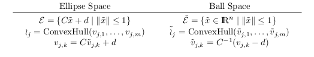
After this transformation, the closest point on an obstacle to the ellipsoid in the ellipse space, will be the closest point to the origin in the ball space. This problem can be formally constructed in the following way:
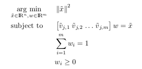
The constraints state that 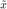 must be a convex combination of the vertices in obstacle 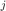. It ensures that must be in the closure of obstacle while minimizing the norm of . This results in the optimal point 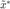. Then we simply transform it back into the ellipse space using 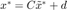.
We define the problem in cvx as follows:
function [ x ] = ClosestPointOnObstacle( C,d,O,i ) %CLOSESTPOINTONOBSTACLE returns closest point on the obstacle (create obstacle class) %input: % C - ellipse parameter (nxn matrix) % d - ellipse parameter (n vector) % O - list of obstacles % i - index of obstacle closest to the ellipse %output: % x - point on obstacle O that is closest to the ellipse V=O(:,:,i)'; k=size(O,1); % dimension of vertices n=size(O,2); % number of vertices % transform each vertex to the ball space V_bar=inv(C)*(V-d); % define and solve problem in cvx cvx_begin quiet variable x_bar(n) variable w(k) nonnegative minimize(norm(x_bar)) subject to V_bar*w==x_bar; sum(w)==1; cvx_end % transform point back to ellipse space x=C'*x_bar+d; end
The hyperplane that separates the obstacle and the ellipsoid must only intersect the boundary of obstacle and be tangent to the ellipsoid. The simplest way to calculate this is to consider the following representation of the ellipsoid:
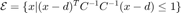.
Then 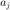 of the hyperplane is the gradient of the ellipsoid's barrier function at 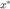:
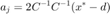
Once is known, 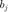 can be calculated as:
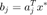
In practice, it is not necessary to calculate the separating hyperplane of every obstacle, the algorithm employs a few techniques to optimize the process:
- we run the solver for the above problem on the closest obstacle to the ellipsoid first
- then after calculating the separating hyperplane, we exclude all the obstacles that are also separated from the ellipse by this hyperplane, before calculating the next hyperplane for the next closest obstacle
From the above procedure, we find that not very many hyperplanes are needed to create an obstacle-free region. In our experiments, we have 80 obstacles and usually less than 10 hyperplanes are calculated. This matches the observation that [1] made about the number of hyperplanes needed.
Part 2 - Calculate the inscribed ellipsoid
Now that we have an obstacle-free polyhedral region, we must calculate the inscribed ellipsoid. This problem can be constructed as:
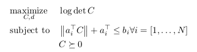
We solved this problem using CVX. However, CVX cannot efficiently solve and the user guide [2] recommended using the det_rootn function instead:
% Calculate the inscribed ellipsoid sizeA = size(A); n = sizeA(2); m = sizeA(1); cvx_begin quiet variable C(n,n) symmetric variable d(n) maximize( det_rootn( C ) ) subject to for j = 1:m norm( C*A(j,:)', 2 ) + A(j,:)*d <= b(j); end cvx_end
Data Synthesis
To illustrate the solution, we randomly generate triangles in a bounded space to simulate our environment with generateTestdata.m. Triangles are convex, and many convex shapes can be further broken down into triangles. A sample environment is shown below.
We then select a spot, 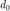 where we would like the obstacle-free region to be. The initial ellipsoid is a circle with a small radius around the specified coordinates.
generateTestdata; %%%%%%%%%%%%%%%%%%%%%% % This portion of the code converts the output of generateTestdata into a usable % format for further processing. x = xv(1:3,:); y = yv(1:3,:); for i=1:size(x,2) O(:,:,i)=[x(:,i) y(:,i)]; end %%%%%%%%%%%%%%%%%%%%%% C = 0.01*[1 0; 0 1]; % define small circle d = zeros(1,2); [d(1),d(2)] = getpts; % get d_0, double click an empty spot on the figure d = d'; hold on; plot(d(1),d(2),'xk'); txt=' d_0'; text(d(1),d(2),txt); hold off;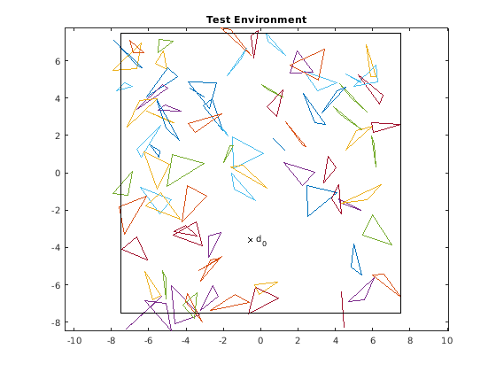
Implemented Solution
num_iterations = 0;
area = [det(C)];
threshold = 0.01;
growth = 100;
while growth > threshold
% Calculate the separating hyperplanes (to find the obstacle-free % polyhedral region) O_remaining = O; num_vertices = size(O_remaining,1); dim = size(O_remaining,2); num_iterations = num_iterations + 1; A = []; b = []; while size(O_remaining,3) ~= 0 % while O_remaining is not empty l_star = ClosestObstacle(C,d,O_remaining); x_star = ClosestPointOnObstacle(C,d,O_remaining,l_star); [a_i, b_i] = tangent( C,d,x_star ); % add the new hyperplane to the polyhedral A = [A; a_i']; b = [b; b_i]; O_excluded = [l_star]; % indices of obstacles that the hyperplane a_i*x=b_i separates for j = 1:size(O_remaining,3) if isequal(a_i'*O_remaining(:,:,j)'>=b_i,ones(1,num_vertices)) % if all of the obstacle vertices are on the other side of % the hyperplane, then don't bother calculating a % hyperplane for that obstacle O_excluded = [O_excluded, j]; end end O_remaining(:,:,O_excluded) = []; end prev_C=C; prev_d=d; % Calculate the inscribed ellipsoid sizeA = size(A); n = sizeA(2); m = sizeA(1); cvx_begin quiet variable C(n,n) symmetric variable d(n) maximize( det_rootn( C ) ) subject to for j = 1:m norm( C*A(j,:)', 2 ) + A(j,:)*d <= b(j); end cvx_end growth = (det(C) - det(prev_C))/det(prev_C); area = [area det(C)];
Results
Below is an illustration of the algorithm in action. For every iteration, the left graph shows the calculated polyhedral and the inscribed ellipsoid from the previous iteration. The right graph shows the newly inscribed ellipsoid based on the current polyhedral. Note that the ellipsoid only grows in every iteration, it does not shrink. Eventually, once the growth no longer exceeds the specified threshold, the algorithm ends. This behaviour matches that of figure 3 in [1].
theta = linspace(0,2*pi,200);
prev_ellipse_inner = prev_C*[cos(theta); sin(theta)]+prev_d;
ellipse_inner=C*[cos(theta); sin(theta)]+d;
points =poly2D(A,b)';
[k,av] = convhull(points);
v_x = points(:,1);
v_y = points(:,2);
figure('Position',[0 0 850 325]);
subplot(1,2,1)
plot(xv,yv);
hold on
plot(v_x(k), v_y(k), 'bo-');
plot( prev_ellipse_inner(1,:), prev_ellipse_inner(2,:), 'r--' );
title(['Iteration ',num2str(num_iterations)]);
axis square;
hold off;
subplot(1,2,2)
plot(xv,yv);
hold on
plot(v_x(k), v_y(k), 'bo-');
plot( ellipse_inner(1,:), ellipse_inner(2,:), 'r--' );
axis square;
hold off;
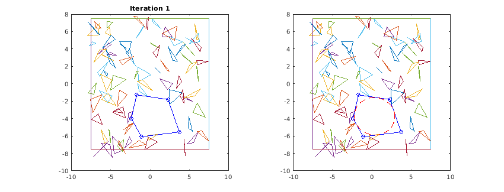 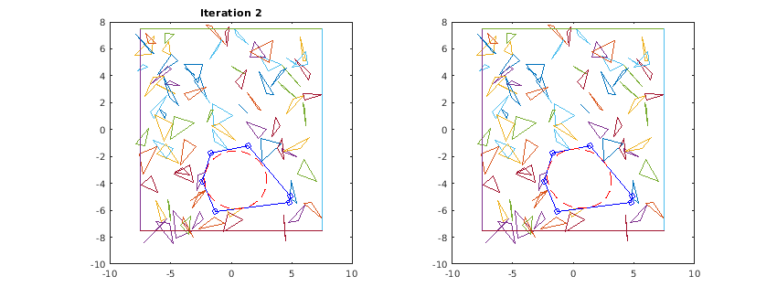 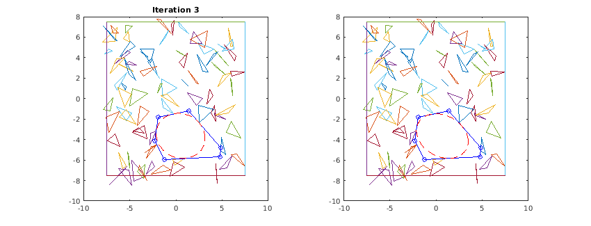 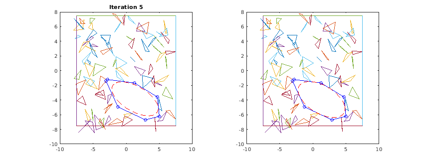 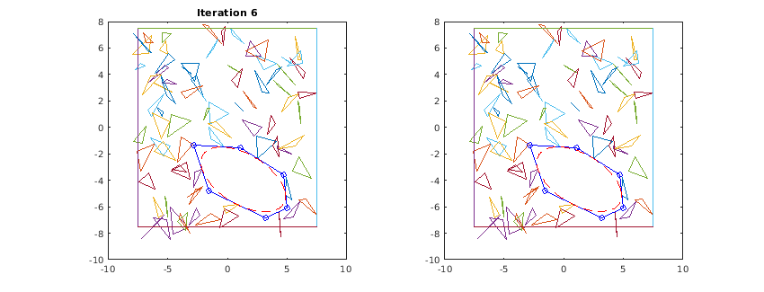 end
Area of the ellipse for each iteration
It can be seen in the figure below that the area of the ellipse increases for each iteration. Although the 2D environment is complicated with many obstacles, the algorithm is able to converge in several iterations.
figure('Position',[600 0 450 200]); area = area*pi; plot([0:1:size(area,2)-1],area); xticks(0:1:size(area,2)-1); grid on; ylabel('Area'); xlabel('Number of iterations'); title('Area of the ellipse for each iteration'); snapnow;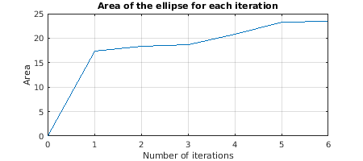
Analysis and Conclusions
The advantages of this method is that it is computationally efficient. Even though the original problem is non-convex and complicated, the heuristic is able to turn the complicated problem into a convex optimization problem. Another reason for this efficiency is that we can neglect many redundant obstacles from the environment, using the properties of a convex polygon. This is extremely useful in real-time application such as robot motion planning.
The main disadvantage of this method is that it cannot guarantee that the returned solution is the largest, convex, obstacle-free region in the environment. However, for most non-convex optimization problems, it is very difficult to find the optimal solution. One thing to note is that the algorithm requires good initialization. In applications such as unmanned aerial vehicle path planning, we first need to compute the convex region to generate a good trajectory for the robot. Since the area is expanded without direction, this means that even though the algorithm can find a large convex region in the space,it may not be the largest space in the entire map since our algorithm depends on the initial point.
References
[1] R. Deits and R. Tedrake, “Computing large convex regions of obstacle-free space through semidefinite programming,” in Proceedings of the eleventh international workshop on the Algorithmic Foundations of Robotics, Istanbul, 2014.
[2] Grant, Michael C., and Stephen P. Boyd. "CVX Research, Inc." CVX: Matlab software for disciplined convex programming, cvxr. com/cvx (2013).